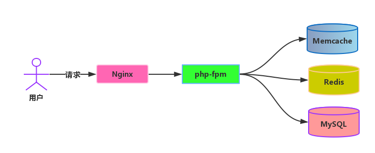
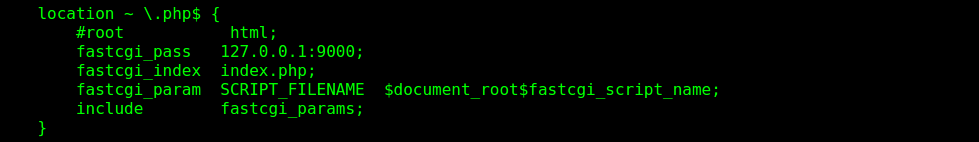
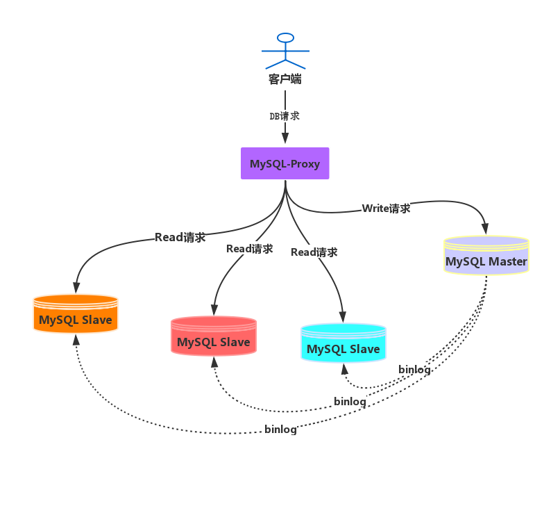
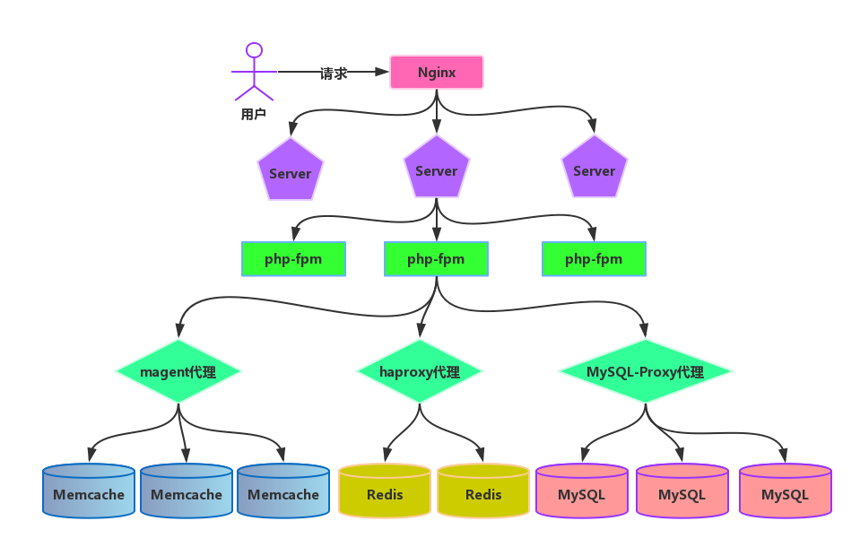

HELLO,
MY NAME IS XuJianGuo AND THIS IS MY BLOG
PHP架构中的各级负载均衡
负载均衡
出现的场景：随着访问量的增加，单个服务点不能快速合理处理用户请求时，需要添加多个服务点分摊压力，通过对服务点的负载均衡，对请求进行分配。
概念：将流量分摊到多个操作单元上进行执行，从而共同完成工作。
优点：
- 负载均衡器优化了访问请求在服务器组之间的分配，消除了服务器之间的负载不平衡，从而提高了系统的反应速度与总体性能
- 负载均衡器可以对服务器的运行状况进行监控，及时发现运行异常的服务器，并将访问请求转移到其它可以正常工作的服务器上，从而提高服务器组的可靠性采用了负均衡器器以后，可以根据业务量的发展情况灵活增加服务器，系统的扩展能力得到提高，同时简化了管理
负载均衡前的架构
在一般的生产环境中，都是采用下面的基础架构，用户发起请求，请求被nginx服务器接收，nginx服务器找到对应站点服务转发，如果是php请求的话，就会 被php-fpm处理，在处理请求的过程中，会调用到Cache或者DB的服务，就是访问对应的服务器，常见的Cache服务器有Memcache和Redis，DB服务器用的最多 是MySQL。
Nginx的负载均衡
总体来说，Nginx的负载均衡是通过在配置文件中定义一组服务器，将请求过来的时候，通过算法计算出应该选择这组服务器的哪个进行处理，然后转发请求到该服务器。
在Nginx中，提供了ngx_http_upstream_module模块，允许定义一组服务器，下面我们定义一组服务器：
upstream servers {
server server1.xujianguo.com weight=5;
server server2.xujianguo.com;
server server3.xujianguo.com:8080;
server backup1.xujianguo.com:8080 backup;
server backup2.xujianguo.com:8080 backup;
}
每7个请求会通过以下方式分发： 5个请求分到server1.xujianguo.com， 一个请求分到server2.xujianguo.com，一个请求分到 server3.xujianguo.com:8080。与服务器通信的时候，如果出现错误，请求会被传给下一个服务器，直到所有可用的服务器都被尝试过。 如果所有服务器都返回失败，客户端将会得到最后通信的那个服务器的（失败）响应结果。我们看到有backup标识的服务器是备用服务器。当主 服务器不可用以后，请求会被传给这些服务器。
通过请求在服务器组中进行转发，在大流量访问的时候，不会容易导致单台服务挂掉，可以合理的将压力分配到各个服务器上。下面看看Nginx是用 什么样的算法进行请求转发的。
加权轮询： 在前面的配置文件中我们看到有个weight的字段，这个是标识轮询的概率，默认值为1，在上面的配置中，第一个服务器的weight为5，其他两台 都是1，所以首先将请求都分给高权重的第一台服务器，直到该服务器的权值降到了比其他服务器低，才开始将请求分给下一个高权重的服务器中。
ip hash： 这个算法的核心是根据ip计算出使用那台服务器进行处理，所以来自同一个ip的请求会被分发到同一台服务器进行处理。但是这个也会导致单个服务器 负载过大的问题出现，这个是很值得注意的。
fair： 原理是根据后端服务器的响应时间来判断负载情况，然后选出负载最轻的服务器进行分流，这种策略具有很强的自适应性，但是在实际的网络中往往不是 这么简单。
一致性hash： 一致性hash采用了nginx内置的一致性hash环，然后通过算法在环中选择映射的服务器进行处理。
php-fpm的负载均衡
我们都知道，php-fpm是nginx处理php服务的管理器，如果请求的是php，nginx首先找到对应的服务器进行处理，在服务器处理php中，会将 php的请求交给php-fpm这个fastcgi处理，所以在我们的nginx的server配置中，都有类似的这项：
php-fpm中做负载均衡的思想跟Nginx的思想是一致，首先配置多个php-fpm的处理器：
upstream myfastcgi {
server 172.16.236.110 weight=1;
server 172.16.236.111 weight=1;
server 172.16.236.112 weight=1;
}
然后在单个server的配置里面修改php-fpm的转发处理接口：
location ~ \.php$ {
fastcgi_pass myfastcgi;
fastcgi_index index.php;
fastcgi_param SCRIPT_FILENAME $document_root$fastcgi_script_name;
include fastcgi_params;
}
所以在这个server接收到php请求的时候，将会在这组php-fpm中选择一个进行分发请求，当处理请求过大的时候，才能将请求合理负载到每个 php-fpm中，做到负载均衡。
Memcache的负载均衡
Memcache自身是不带负载均衡的处理的，所以要借助外力实现负载均衡，下面是常见的两种方式：
- 在客户端程序实现负载均衡的逻辑，维护Memcache集群。
- 使用magent代理，从读写请求按照一定的算法分配到各个Memcache节点，实现负载均衡。
下面简单描述下使用magent实现Memcache负载均衡的逻辑过程：
- 开启magent代理程序，开放端口
- 将Memcache节点的信息配置到magent中，交给magent维护
- 客户端程序发起Memcache的读写请求，magent根据算法选择对应的Memcache节点处理请求
Redis的负载均衡
Redis的负载均衡实现跟Memcache的类似，可以通过自身程序的实现，也可以从通过外部的tool去实现，这里就不多说了。
MySQL的负载均衡
MySQL的负载均衡器有很多，下面我们以MySQL-Proxy为例说明：
MySQL-Proxy是一个MySQL的代理服务器，用户的请求先发向MySQL-Proxy，然后MySQL-Proxy对用户的数据包进行分析， 从下一层的MySQL数据库中选择一台数据库，将用户的请求包交给MySQL处理。
首先MySQL-Proxy以服务器的身份接受客户端的请求，根据相应配置对这些请求进行分析处理，然后以客户端的身份转发给相应的 后端数据库服务器，再接受服务器的信息，然后返回给客户端。所以MySQL-Proxy需要同时实现客户端和服务器的协议。由于要对 客户端发送过来的SQL语句进行分析，还需要包含一个SQL解析器。MySQL-Proxy通过使用lua脚本，来实现复杂的连接控制和过滤， 从而实现读写分离和负载平衡。
从上面的图很明显看出，一台Master处理Write请求，三台Slave处理Read请求，Master和Slave之间通过binlog保持数据的一致性。 通过上层的MySQL-Proxy代理请求，分析SQL的类型和特点，然后转发到对应MySQL进行处理，从而实现负载均衡。
负载均衡后的架构
总结
当单点的服务不能支撑我们的业务的时候，就会通过增加服务点来实现请求的分发，缓解单点的压力，负载均衡实现的这样的功能。无论是 php-fpm/Redis/Memcache/MySQL，它们都无法从自身做到负载均衡，需要通过外带的负载均衡器去实现，负载均衡器可以检测服务点 的服务情况，可以根据算法合理的请求分发到对应的合适的服务器进行处理，从而实现负载均衡。